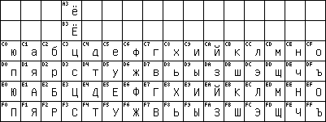

charset=koi-0 [TXT] [BDF]
The brothers and orthodox Slavonic monks Cyrill and Methodius invented the Glagolitic script in Macedonia in the year 863 as an encrypted Greek alphabet with extensions for special Slavic sounds. Their scholar Clement of Ohrid invented the "Cyrillic" script later as a more readable transformed Glagolitic alphabet. Over the course of the centuries the Cyrillic script was spread and transformed and it was modernized into its current Romanized shape (Grazhdanka) under Tsar Peter the Great.
Nowadays the Cyrillic script is used by more than 70 languages ranging from Eastern Europe's Slavic languages Russian (ru), Ukrainian (uk), Belarussian (be), Bulgarian (bg), Serbian (sr), and Macedonian (mk) over Central Asia's Altaic languages like Azerbaijani (az), Turkmen (tk), Kurdish (ku), Uzbek (uz), Kazakh (kk), Kirghiz (ky) to others such as Tajik (tg) and Mongolian (mn). Your library may have the booklet "Alfavity jazykov narodov SSSR" by Kenesbai Musaevich Musaev that was published in 1965.
With a small accent-free alphabet, Russian and Bulgarian seemed equally well-suited for computer processing as English.
The oldest standardized Cyrillic computer charset I found (in John Clews' Language Automation Worldwide) is the governmental standard GOST 13052, a 7bit charset that encoded the letters of the Russian alphabet (which happens to satisfy all Bulgarian needs also) on top of corresponding ASCII letters of the opposite case (to recognize Russian text like "rUSSKIJ tEKST" by its case when presented in ASCII. I will refer to this property as the KOI correspondence), sacrificed the dotted ë to reduce the alphabet to 32 letters fitting in two rows and dropped the rarely needed CAPITAL HARD SIGN to prevent its collision with DELETE on position =7F or EOF=-1:
The fact that Bulgarian uses the CAPITAL HARD SIGN much more often prompted some Bulgarians to encode their hard sign on top of the unneeded Russian YERY bI instead.
The first was another 7bit charset named KOI-7 with only capital letters:
KOI-8 was used on many networked Unix hosts. Naturally, the ASCII dollar sign $ got used instead of the international currency sign ¤ although this was not politically correct. And the dotted ë (yo) got added in column 3 so that words like eë (yeyo) no longer had to be written as unaccented ee.
More correctly, the last step didn't occur until the Demos company started porting Cyrillic support to PC Unixes like Xenix in the late 1980s and designed a new Russian KOI-8 code page which later came to be known as KOI8-R with the dotted ë at its position from the first DIS-6937-8/DIS-8859-5 draft and all non-Russian letters scraped and replaced by block graphics.
But many font vendors implemented only the letter subset. Let us call it KOI8-B, this extended (bolshee) KOI-8 base containing the letters (bukvy) common (basa) to all modern variants of KOI-8:

charset=koi8-b
[TXT]
[BDF]
In the mid-1980s, the ECMA committee designing the ISO-8859 series and its Cyrillic ISO-8859-5 wanted to retain compatibility with the installed base of the ten-year-old standard KOI-8, and elegantly added the missing Ukrainian, Byelorussian, Serbian and Macedonian letters in the unused code points. Their draft got published as 1st edition standard ECMA-113 in 1986 and draft international standard DIS-8859-5 in 1987 and was registered with the number 111 in ISO's International register of character sets to be used with (ISO-2022) escape sequences, hence the name ISO-IR-111 and the nickname ECMA-Cyrillic:
ISO-IR-111 was never adopted as final ISO-8859-5 because in the meantime GOST had inhaled some perestroika and declared the installed base and KOI correspondence less important and revised its 19768 standard from 1974 in 1987 into an incompatible new GOST 19768-87 that moved the Russian letters one row up and ordered them in the native Russian dictionary order (ABVGD) instead of the KOI correspondence order (ABCDE):
charset=GOST-19768-87
[TXT]
[BDF]
ECMA immediately followed GOST's move on advice of their Soviet Union experts by revising their first proposal and permuting their ISO-IR-111 characters onto the code positions of the new GOST 19768-87. The designers did not go all the way to also sort the non-Russian letters into the Russian alphabet to ensure proper dictionary order for all languages like you find it for example in the ISO 9 standard (Transliteration of Cyrillic). The revised proposal got published as 2nd edition ECMA-113:1988 (superseding the original ECMA-113:1986 which came to live on (popular for its combination of the non-Russian letters with KOI-8 compatibility) under its nickname ECMA-Cyrillic (although ECMA refers you to ISO-8859-5 now) or ISO-IR-111) and accepted into ISO 8859 (in spite of the Soviet vote against its dollar sign) as final ISO-8859-5 (ISO-IR-144) in 1988. Many people, including me, feel that it would have spared us a lot of trouble if the original KOI8-compatible DIS-8859-5:1987 had also been elected ISO-8859-5:1988. Now we have an international standard ISO-8859-5 which is so non-standard that almost nobody likes or uses it:
charset=ISO-8859-5
[TXT]
[BDF]
After RFC 1341 (MIME) had suggested the use of ISO-8859-5 Cyrillic in e-mail communication while the Russian section of the Internet (the relcom.* newsgroups) was still using KOI-8, Andrei Chernov went to publish his RFC 1489 Registration of a Cyrillic Character Set "KOI8-R" and established KOI8-R as the de-facto standard on the Internet. KOI8-R which was later also numbered CP878 contains the dotted KOI8 plus a lot of box-drawing characters:
Andrei Chernov offers a lot of practical information about KOI8-R on his website.
With all these charsets, there is a special Ukrainian problem. Ukrainians read the letter GHE with downstroke as heh. To write a correct ghe they need the Ukrainian letter GHE WITH UPTURN that had been suppressed by Stalin's officials and re-established in 1990.
One might abuse the accented GHE (Macedonian GJE) in ISO-IR-111 or ISO-8859-5 to represent GHE WITH UPTURN but this does not seem to be the preferred option. The Ukrainians seem to prefer charsets that include the real GHE WITH UPTURN. GHE WITH UPTURN is present in Microsoft's CP1251, Fingertip's KOI8-Unified and of course in Unicode. Still, these options didn't seem close enough to KOI8-R to stop the Ukrainian postmasters from designing a new KOI8-U and publishing it as RFC2319 in April 1998. KOI8-U added only the Ukrainian letters in positions compatible with ISO-IR-111 used by many Ukrainians and kept as many box-drawing characters as possible because many users in the area are still stuck with MS-DOS. Because of that preference, it lacks the Belarussian accented short U and Serbian and Macedonian support:
I assume that RFC2319's and RFC1489's specification of the KOI8-R bullet as mathematical U+2219 BULLET OPERATOR is an error inherited from RFC1345 and has to be corrected to U+2022 BULLET like in Keld Simonsen's own tables for IBM437 or KOI8-R. Generally note that RFC1345 and anything based on it like GNU recode 3.4.1 contained a number of errors especially in the Cyrillic area: its isoir111 looks more like cp1251 than koi8. RFC2319 contains the additional error that it codes CYRILLIC CAPITAL LETTER UKRAINIAN IE as U+0403 instead of U+0404.
You can use this koi8-f font to display all koi8-* text and all letters will show up correctly but some of the less used graphic symbols in koi8-r can appear wrongly.
charset=Windows-1251
[TXT]
[BDF]
charset=MacUkrainian
[TXT]
[BDF]
charset=bulgarian-mik
[TXT]
[BDF]
Have you gotten sick of this plethora of charsets with none being the best? Would you like to have one good charset that is capable of replacing all of the above and will be accepted everywhere? Would you also like to write the non-Slavic Cyrillic languages? You get all of that and more with Unicode (ISO-10646) which simply encodes all characters of the world.
This is the U+0400 Cyrillic block in Unicode. It follows the order of ISO-8859-5:
charset=unicode-2-1
[TXT]
[BDF]
Olga Lapko states on pages 175 and 179 of the brilliant TUGboat issue 17-2 (Proceedings of the 1996 Annual TeX User Group Meeting in Dubna, Russia) that some 100 Cyrillic letters are still missing from Unicode. Most of them seem to be encodable with combining accents and the rest can be added through the procedure described in Appendix B Submitting New Characters of the Unicode Standard, though.
Each Cyrillic letter gets encoded as two bytes in UTF-8. The Standard Compression Scheme for Unicode (SCSU) allows to reduce this to the traditional one byte per letter.
I am still busy writing my Unicode-HOWTO for Linux. I have added a Cyrillic.kmap that abuses the ISO 9 transliteration as an input method to the Yudit Unicode text editor for the X Window System.
I encourage you to mail your comments to roman@czyborra.com. I thank Chrystopher Nehaniv, Andreas Prilop, Peter Cassetta <pete@cyrillic.com>, Andrei Chernov, Keld Simonsen, Borislav Stoyanov, Guentcho Skordev, Ilya Vinarsky, Dima Volodin, Christian Weisgerber, Alain Kessi, and Yuri Demchenko for the valuable information they provided.
Roman Czyborra
1998-05-25 .. 1998-11-30